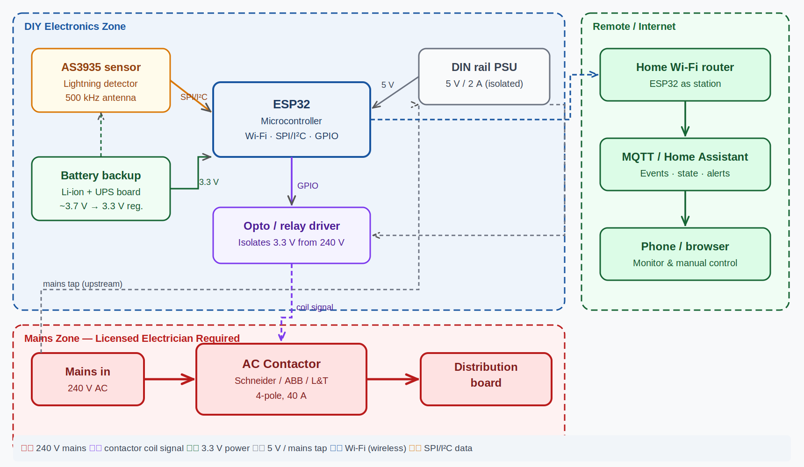
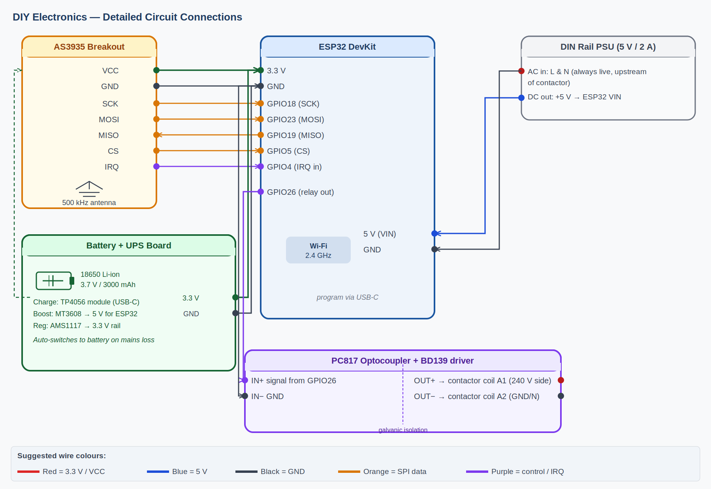
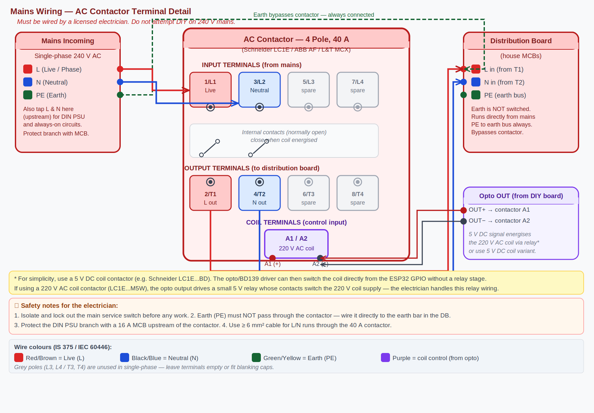

Detection radius
≤ 10km
The first one, on purpose.
A small box that listens for lightning and opens the mains contactor before the storm finishes its sentence. Built in a workshop, deployed under a monsoon, named after a famous mispronunciation. It is not lightning protection. It is a fast, dumb switch with an opinion about timing.
In an Indian monsoon, the grid is a long copper antenna feeding appliances that were not consulted about the weather. MOV-based surge protectors absorb what they can and then quietly cook themselves. They are useful. They are not enough.
The premise here is older than electronics: when the storm gets close, open the door. A 4-pole 40-amp AC contactor severs every conductor running into the house — both live phases and neutral — leaving a physical air gap between the grid and everything inside.
The decision to open is made by an AS3935 franklin sensor watching for the broadband RF signature of a lightning discharge. The decision to re-engage is made by a clock: a configurable cool-off window after the last qualifying strike.
The system is engineered to fail open. If the controller dies, if the supply to the coil fails, if the optocoupler turns into glass — the contactor falls open under its own spring. The safe state is disconnected. That is deliberate.
A discharge within range; an interrupt on a GPIO; a coil drops; a contactor falls. The house, briefly, is its own island.
state=tripped. Cool-off timer begins.Timings are typical for the AX-style 40A contactor used in unit 001. Slower contactors exist; faster ones cost more than the rest of the build combined.



offline. Discovery for Home Assistant.Everything observable from outside the enclosure is on MQTT. Home Assistant discovery is enabled, so the device appears with a full set of entities the moment the broker sees the LWT go online.
| Topic | Payload | Retained |
|---|---|---|
| jigawatt/state | armed · tripped · cooling · fault | yes |
| jigawatt/strike | {distance_km, energy, ts} | no |
| jigawatt/strike_count | integer, since boot | yes |
| jigawatt/contactor | closed · open | yes |
| jigawatt/battery_v | float (volts) | yes |
| jigawatt/rssi | integer (dBm) | yes |
| jigawatt/availability | online · offline (LWT) | yes |
| Topic | Payload | Effect |
|---|---|---|
| jigawatt/cmd/arm | 1 | Force re-engage after a trip. |
| jigawatt/cmd/test | 1 | Simulate a strike for testing. |
| jigawatt/cmd/reboot | 1 | Reboot the ESP32. |
| Item | Qty | Cost (INR) |
|---|---|---|
| AS3935 lightning sensor module (SPI) | 1 | 850 |
| ESP32 DevKit v1 | 1 | 450 |
| 4-pole 40A AC contactor (230V coil) | 1 | 1,100 |
| PC817 optocoupler | 1 | 10 |
| BD139 NPN transistor | 1 | 15 |
| 1N4007 flyback diode | 1 | 5 |
| Resistors, capacitors, headers | — | 100 |
| Li-ion UPS board (5V, 18650-based) | 1 | 750 |
| 18650 Li-ion cell, 3000 mAh | 2 | 500 |
| 5V / 230V isolated AC-DC module | 1 | 350 |
| IP65 polycarbonate enclosure | 1 | 700 |
| DIN rail terminals, ferrules, lugs, wire | — | 400 |
| Perfboard / custom PCB | 1 | 250 |
| Total | — | ≈ 5,480 |
Indicative pricing. Excludes mistakes, lost screws, and the second AS3935 you buy after the first one disappears into a drawer.
| AS3935 pin | ESP32 GPIO | Notes |
|---|---|---|
| VCC | 3V3 | Do not feed this from 5 V. |
| GND | GND | Common with logic ground. |
| SCK | GPIO 18 | SPI clock (VSPI default). |
| MISO | GPIO 19 | SPI MISO. |
| MOSI | GPIO 23 | SPI MOSI. |
| CS | GPIO 5 | Active low. |
| IRQ | GPIO 4 | Interrupt on strike / noise / disturber. |
| Signal | ESP32 GPIO | Path |
|---|---|---|
| Coil drive | GPIO 16 | GPIO → 1 kΩ → PC817 LED → opto transistor → BD139 base → coil. 1N4007 across coil. Coil supply isolated from ESP32 rail. |
| Signal | ESP32 GPIO | Notes |
|---|---|---|
| Heartbeat LED | GPIO 2 | Onboard LED. Blinks once per second when armed. |
| Reset | EN | External momentary button. |
PlatformIO with the Arduino-ESP32 framework. From the repo root:
# clone and enter the firmware dir cd firmware cp config.example.h config.h # set Wi-Fi, MQTT, thresholds pio run -t upload # flash the ESP32 pio device monitor # watch it boot
| Setting | Default | Effect |
|---|---|---|
| STRIKE_DISTANCE_KM | 10 | Trip when a strike is detected within this radius. |
| COOL_OFF_SECONDS | 300 | Hold the disconnect for this long after the last qualifying strike. |
| INDOOR_MODE | true | Adjusts AS3935 gain for enclosures with nearby metal or electronics. |
| NOISE_FLOOR | 2 | Higher rejects more, detects less. |
| WATCHDOG_THRESHOLD | 2 | Disturber rejection sensitivity. |
| SPIKE_REJECTION | 2 | Filters out short non-lightning RF events. |
With MQTT discovery enabled and the broker configured, the device
shows up under Settings → Devices & Services → MQTT
as jigawatt, exposing entities for state, last strike
distance, strike count, contactor position, battery voltage, and RSSI,
plus buttons for arm, test, and reboot. A
reference dashboard card and a sample automation
(notify on first strike within 20 km, log every trip) live in
docs/home_assistant/.
jigawatt is the second machine in the starstucklab ecosystem — small, self-contained instruments that solve one specific problem in a domestic engineering context and then, ideally, stop demanding attention.
The first one (unit 001) was assembled in May 2025, ahead of the monsoon, in response to a series of unkind transients that did unkind things to a refrigerator compressor and a fibre ONT.
The name is a homage to Back to the Future's "1.21 gigawatts," reliably mispronounced "jigawatts" by Doc Brown and now reliably re-explained to bewildered listeners. Spelled here without the g, said the same way, never corrected.
The next unit, if there is one, will get a custom PCB, a magnetic loop antenna external to the enclosure, and a slightly less opinionated firmware. No promises about timing.